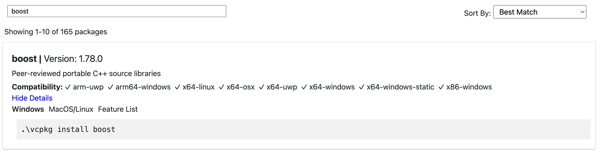

开发环境设置¶
相关软件¶
开发所需基础软件以及工具
基础软件部分¶
前期的软件开发工作需要的
gcc/g++
cmake
git
vcpkg
vscode
C/C++编译器的安装¶
安装gcc/g++ 等开发必要软件
song@ls-ubuntu:~$ sudo apt update
song@ls-ubuntu:~$ sudo apt install build-essential
安装成功，确认编译器版本
song@ls-ubuntu:~$ gcc --version
gcc (Ubuntu 11.2.0-19ubuntun1) 11.2.0
Copyright (C) 2021 Free Software Foundation, Inc.
This is free software; see the source for copying conditions. There is NO
warranty; not even for MERCHANTABILITY or FITNESS FOR A PARTICULAR PURPOSE.
song@ls-ubuntu:~$ g++ --version
g++ (Ubuntu 11.2.0-19ubuntun1) 11.2.0
Copyright (C) 2021 Free Software Foundation, Inc.
This is free software; see the source for copying conditions. There is NO
warranty; not even for MERCHANTABILITY or FITNESS FOR A PARTICULAR PURPOSE.
CMake的安装¶
安装CMake
songl@ls-ubuntu:~$ sudo apt install cmake
查看版本信息，确认安装成功
songl@ls-ubuntu:~$ cmake --version
cmake version 3.22.1
CMake suite maintained and supported by Kitware(kiware.com/cmake).
备注
由JetBrains出品的C++ IDE CLion 自带CMake
git的安装¶
songl@ls-ubuntu:~$ sudo apt install git
查看版本信息，确认安装成功
songl@ls-ubuntu:~$ git --version
git version 2.34.1
git代理设置方法：
songl@ls-ubuntu:~$ git config --global https.proxy http://127.0.0.1:1080
songl@ls-ubuntu:~$ git config --global https.proxy https://127.0.0.1:1080
备注
上述代理地址仅作为示例之用，请合法合规使用网络代理
vcpkg的安装¶
vcpkg 是微软出品的开源的C++软件包管理工具，可以很方便地搜索和安装第三方C++软件包。本项目所强烈依赖的 boost , googletest 等均可以通过vcpkg安装和管理。
安装vcpkg
songl@ls-ubuntu:~$ git clone https://github.com/Microsoft/vcpkg.git
songl@ls-ubuntu:~$ cd vcpkg
songl@ls-ubuntu:~$ ./bootstrap-vcpkg.sh
更新vcpkg
vcpkg更新只需要通过git拉取最新源码，再重新构建即可
songl@ls-ubuntu:~$ cd vcpkg
songl@ls-ubuntu:~$ git pull
songl@ls-ubuntu:~$ ./bootstrap-vcpkg.sh
使用vcpkg
使用vcpkg安装第三方软件包，可以先通过vcpkg的 在线软件包检索工具 检索软件包名称。例如搜索boost,可以看到：
关联vcpkg与CMake
使用toolchain file 关联vcpkg与CMake
songl@ls-ubuntu:~$ cmake -B [build directory] -S . -DCMAKE_TOOLCHAIN_FILE=[path to vcpkg]/scripts/buildsystems/vcpkg.cmake
然后就可以用CMake构建我们的C++项目了
songl@ls-ubuntu:~$ cmake --build [build directory]
在CLion中使用vcpkg
在CLion中，选择CLion->Preference打开主设置菜单，然后在左边栏选择Build, Execution, Deployment->CMake,
然后在右侧Profiles下点击+号新增配置（debug/release), 然后在 CMake options: 中填入
-DCMAKE_TOOLCHAIN_FILE=[path to vcpkg]/scripts/buildsystems/vcpkg.cmake
Visual Studio Code的安装与使用¶
vs code 是微软出品的开源免费的文本编辑工具。再结合丰富插件，可以打造成为个性化且功能强大的开发工具。
推荐插件
插件名称 |
说明 |
|---|---|
Better C++ Syntax |
The bleeding edge of the C++ syntax |
C/C++ Extension Pack |
Popular extensions for C++ development in Visual Studio Code |
Clang-Format |
Use Clang-Format in Visual Studio Code |
CMake Tools |
Extended CMake support in Visual Studio Code |
Atom One Dark Theme |
One Dark Theme based on Atom |
Material Icon Theme |
Material Design Icons for Visual Studio Code |
关联vcpkg
在vcpkg中 通过Code->Preference->Settings 进入到设置页面，然后搜索 cmake.configureSettings， 然后在搜索结果中点击 “Edit in settings.json”, 在弹出来的json文件中 填入(注意到，此时你的输入光标应该已经准确定位到 “cmake.configureSettings”: { 的右侧)
"CMAKE_TOOLCHAIN_FILE": "[path to vcpkg]/scripts/buildsystems/vcpkg.cmake"